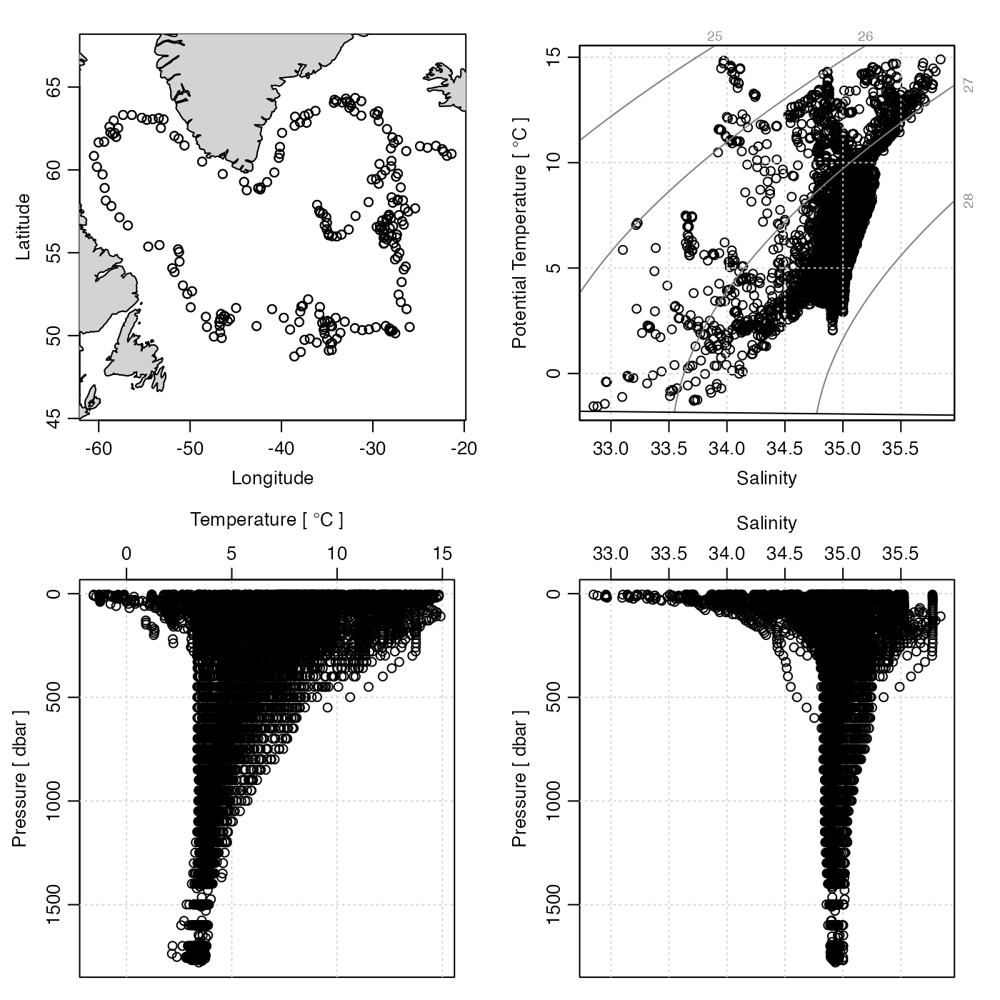

Plot a summary diagram for argo data.
# S4 method for argo
plot(
x,
which = 1,
level,
coastline = c("best", "coastlineWorld", "coastlineWorldMedium", "coastlineWorldFine",
"none"),
cex = 1,
pch = 1,
type = "p",
col = 1,
fill = FALSE,
projection = NULL,
mgp = getOption("oceMgp"),
mar = c(mgp[1] + 1.5, mgp[1] + 1.5, 1.5, 1.5),
tformat,
debug = getOption("oceDebug"),
...
)an argo object.
list of desired plot types, one of the following. Note
that oce.pmatch() is used to try to complete partial
character matches, and that an error will occur if the match is
not complete (e.g. "salinity" matches to both
"salinity ts" and "salinity profile".).
which=1, which="trajectory" or which="map" gives a
plot of the argo trajectory, with the coastline, if one is provided.
which=2 or "salinity ts" gives a time series of
salinity at the indicated level(s)
which=3 or "temperature ts" gives a time series
of temperature at the indicated level(s)
which=4 or "TS" gives a TS diagram at the
indicated level(s)
which=5 or "salinity profile" gives a salinity
profile of all the data (with S and p trimmed to the 1 and 99
percentiles)
which=6 or "temperature profile" gives a
temperature profile (with T and p trimmed to the 1 and 99
percentiles)
depth pseudo-level to plot, for which=2 and higher. May be an
integer, in which case it refers to an index of depth (1 being the top)
or it may be the string "all" which means to plot all data.
character string giving the coastline to be used in an Argo-location
map, or "best" to pick the one with highest resolution, or
"none" to avoid drawing the coastline.
size of plotting symbols to be used if type='p'.
type of plotting symbols to be used if type='p'.
plot type, either "l" or "p".
optional list of colors for plotting.
Either a logical, indicating whether to fill the land with light-gray, or a color name. Owing to problems with some projections, the default is not to fill.
indication of the projection to be used
in trajectory maps. If this is NULL, no projection is used, although
the plot aspect ratio will be set to yield zero shape distortion at the
mean float latitude. If projection="automatic", then one
of two projections is used: stereopolar (i.e. "+proj=stere +lon_0=X"
where X is the mean longitude), or Mercator (i.e. "+proj=merc")
otherwise. Otherwise, projection must be a character string specifying
a projection in the notation used by oceProject() and mapPlot().
3-element numerical vector to use for par(mgp), and also for
par(mar), computed from this. The default is tighter than the R
default, in order to use more space for the data and less for the axes.
value to be used with par('mar').
optional argument passed to oce.plot.ts(), for plot
types that call that function. (See strptime() for the format
used.)
debugging flag.
optional arguments passed to plotting functions.
None.
Other things related to argo data:
[[,argo-method,
[[<-,argo-method,
argo-class,
argoGrid(),
argoNames2oceNames(),
argo,
as.argo(),
handleFlags,argo-method,
read.argo.copernicus(),
read.argo(),
subset,argo-method,
summary,argo-method
Other functions that plot oce data:
download.amsr(),
plot,adp-method,
plot,adv-method,
plot,amsr-method,
plot,bremen-method,
plot,cm-method,
plot,coastline-method,
plot,ctd-method,
plot,gps-method,
plot,ladp-method,
plot,landsat-method,
plot,lisst-method,
plot,lobo-method,
plot,met-method,
plot,odf-method,
plot,rsk-method,
plot,satellite-method,
plot,sealevel-method,
plot,section-method,
plot,tidem-method,
plot,topo-method,
plot,windrose-method,
plot,xbt-method,
plotProfile(),
plotScan(),
plotTS(),
tidem-class
library(oce)
data(argo)
tc <- cut(argo[["time"]], "year")
# Example 1: plot map, which reveals float trajectory.
plot(argo, pch=as.integer(tc))
year <- substr(levels(tc), 1, 4)
data(topoWorld)
contour(topoWorld[['longitude']], topoWorld[['latitude']],
topoWorld[['z']], add=TRUE)
legend("bottomleft", pch=seq_along(year), legend=year, bg="white", cex=3/4)
# Example 2: plot map, TS, T(z) and S(z). Note the use
# of handleFlags(), to skip over questionable data.
plot(handleFlags(argo), which=c(1, 4, 6, 5))
